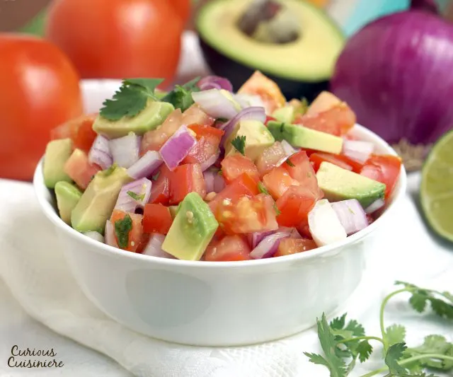

Kachumbari Salad

Kachumbari is a lite salad that accompanies alot of meals. It is simple
with little Ingredients. Its made of fresh ingreideints and is very
healthy. It best accompanies meat and spicey dishes
Ingredients
- ½ medium red onion, diced
- 1 tsp salt
- 2 large tomatoes
- ¾ avocado
- 1 small chili (optional)
- ½ lime, juiced (approx 1 Tbsp juice)
- 1 Tbsp fresh cilantro, chopped
Steps
-
Place the diced onion in a small bowl and massage the salt into the
onion pieces. Cover the salted onions with water and let stand for 10
min.
-
Meanwhile, dice the tomatoes, avocado, and chili (if using). Place them
in a medium bowl.
- Drain the onions and add them to the vegetables.
- Finish by adding the lime juice and cilantro.
-
Mix well and taste the salad. Add salt or more lime juice if desired.